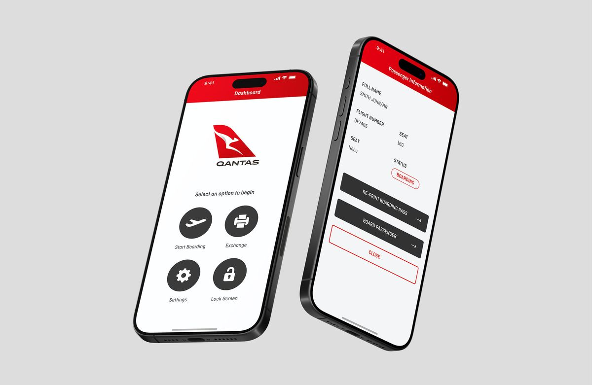
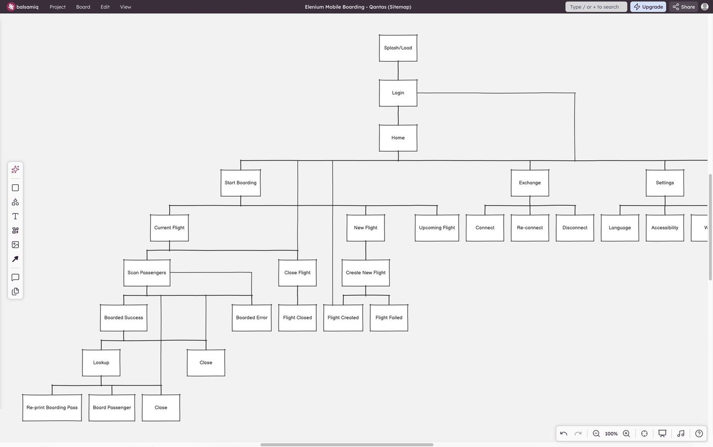
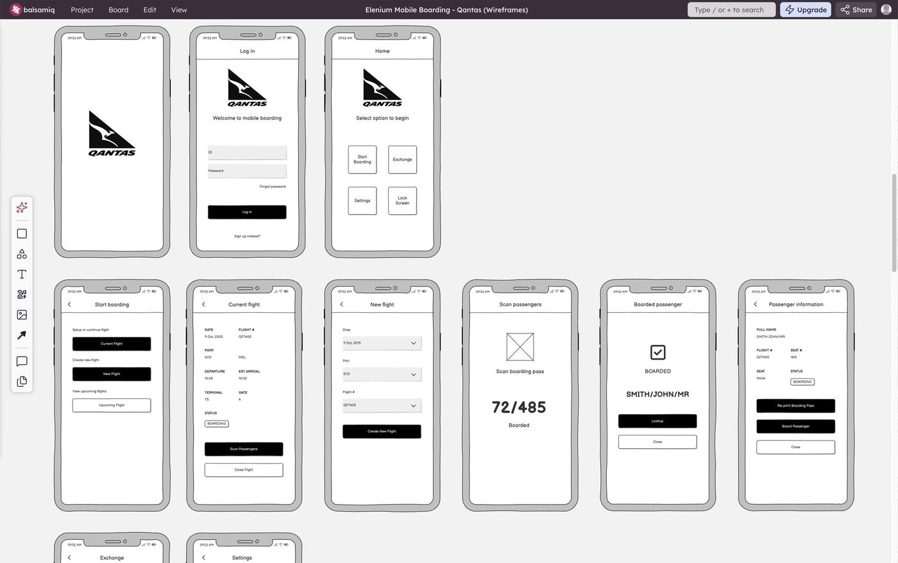
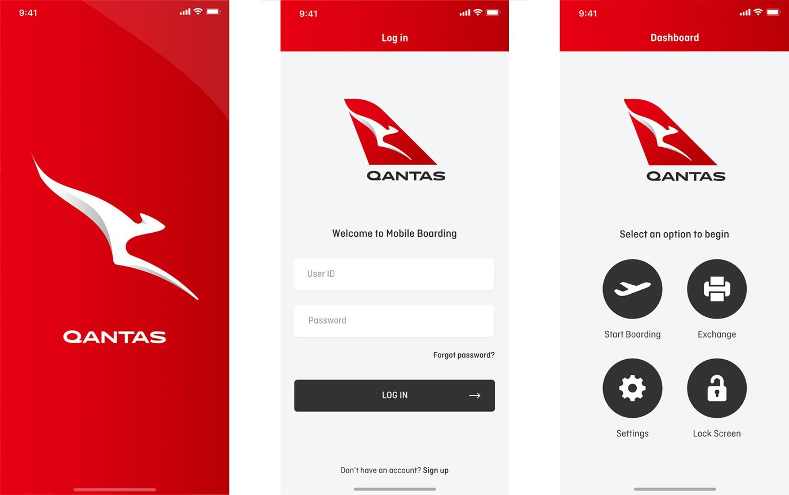
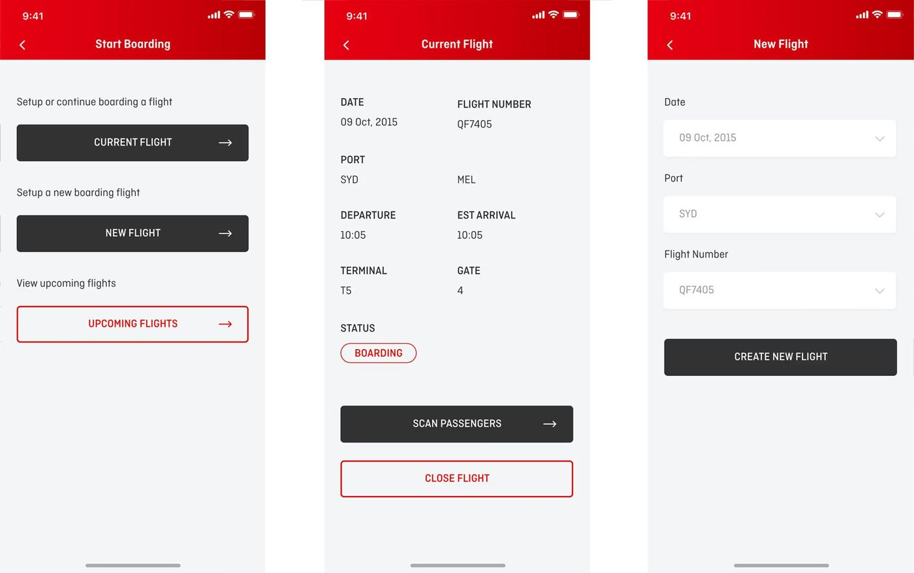
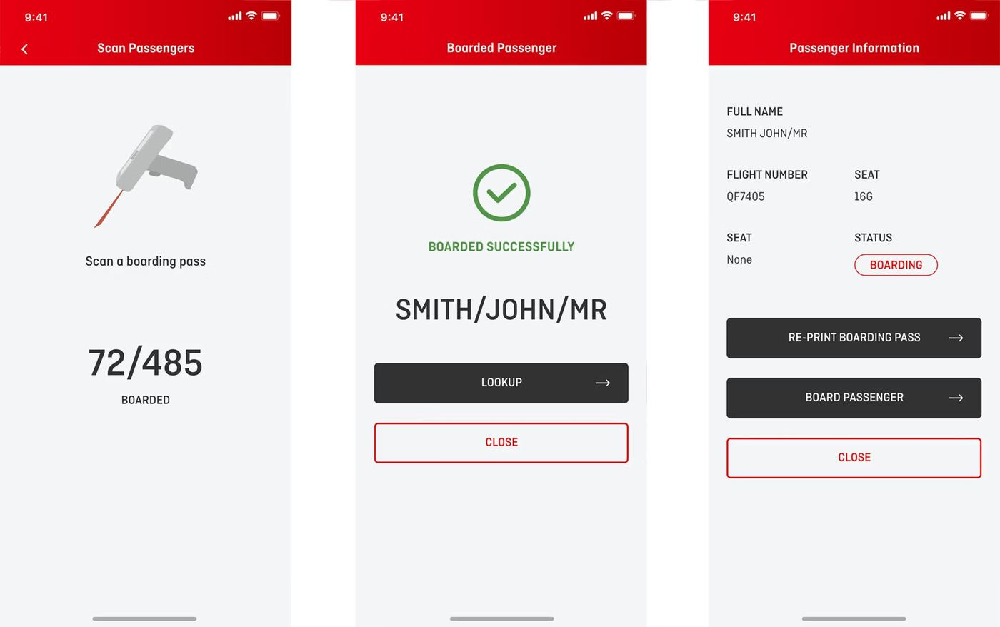

A native gate-agent app built to keep boarding fast, accurate, and stress-free.
Qantas Mobile Boarding is a mobile boarding application designed and built by Elenium, enabling airline customer service agents to scan and process passenger boarding passes directly from a handheld device. Designed for use with both printed and digital boarding passes across iOS and Android, it was built to operate in some of the most time-pressured environments in aviation, busy gates, peak boarding periods, and situations where fixed infrastructure had failed or wasn't available.
This was one of my first UX/UI projects at Elenium, coming shortly after I transitioned from graphic design into interface design, a shift that was partly driven by early commercial discussions with Qantas, where my interface work caught the attention of Elenium's CEO and Qantas executives. That transition shaped the rest of my career, and Qantas Mobile Boarding was one of the first products I took through a full UX/UI design process.

At busy boarding gates, speed and reliability are everything. When a gate scanner goes down or a portable kiosk becomes unavailable, the consequences ripple quickly, queues build, connections are missed, and agents are left managing frustrated passengers without the tools they need.
The existing solutions had real limitations. Fixed gate scanners, when operational, required passengers to position their phone or printed ticket precisely against the scanner, a process that sounds simple but consistently caused delays when passengers fumbled with alignment, especially under time pressure. Portable kiosks provided a fallback but were cumbersome to deploy: they needed to be physically rolled out, set up, and powered, adding time at exactly the moment when speed mattered most.
Beyond equipment failures, agents also needed a way to manage the complexity of peak boarding, handling missed connections, processing passengers from cancelled or delayed flights, and managing boarding line exceptions, all from wherever they happened to be standing on the gate floor.
The objective was to give Qantas customer service agents a handheld tool that could:

A sitemap mapping out the user journey.

Mobile storyboard and wireframes.
As the designer on this project at Elenium, I was responsible for the end-to-end design of the application, working directly with Elenium's CEO, General Manager, and the development and engineering team. The environment at Elenium was largely waterfall, with requirements and priorities shifting frequently, designing well under those conditions required staying close to the team and adapting quickly as the product evolved.
My contributions included:
The core design challenge was designing for an environment that left no room for confusion or hesitation. Gate agents using this app weren't sitting at a desk, they were standing in a busy terminal, managing queues, talking to passengers, and making real-time decisions under time pressure. Every interaction had to be immediately obvious and executable with minimal effort.
The scanning experience itself was central to this. One of the primary advantages of the handheld approach over fixed kiosks was speed, agents could bring the scanner to the passenger rather than asking the passenger to align their ticket precisely with a fixed reader. Translating that physical advantage into a digital interface meant designing a scanning flow that was fast, forgiving, and confident-feeling, even when boarding passes were crumpled, screen brightness was low, or the gate environment was noisy and distracting.
Designing across both iOS and Android added platform-specific considerations, and ensuring consistent performance and usability across both operating systems, with their different interaction conventions and screen sizes, required careful attention throughout.

Mobile designs for Splash, Log In, and Dashboard.

Mobile designs for Start Boarding, Current Flight, and New Flight.

Mobile designs for Scan Passengers, Boarded Passenger, and Passenger Information.
The response from Qantas was strongly positive. The app proved particularly valuable in exactly the scenarios it was designed for, high foot traffic periods and situations where fixed gate infrastructure was unavailable or had failed. Agents found the scanning process significantly faster than the fixed kiosk alternative, where precise ticket placement had been a consistent source of delays. The ability to process passengers from wherever they were standing, rather than directing them to a fixed point, made a meaningful difference to the pace and smoothness of boarding.
Reduced passenger wait times and improved agent responsiveness were the practical results, outcomes that mattered not just to Qantas operationally, but to the passenger experience at the gate.
While the product was built exclusively for Qantas at the time, Elenium designed it as a white-label solution that could be reskinned for any airline, making it a reusable asset across Elenium's broader airline and airport client base.
Qantas Mobile Boarding was one of the first products that showed me what UX/UI design could do in a high-stakes, operationally complex environment. Designing for gate agents, users who needed tools that worked under real pressure, without any margin for confusion, was a formative experience that sharpened how I think about clarity, speed, and the gap between a design that looks good and one that genuinely performs when it counts. The lessons from this project, designing for time-critical environments where every second matters, have stayed with me across every product I've worked on since. There's also a great feeling in knowing an application I designed is being used in airports by thousands of people every day.
Here are a few other projects to explore.